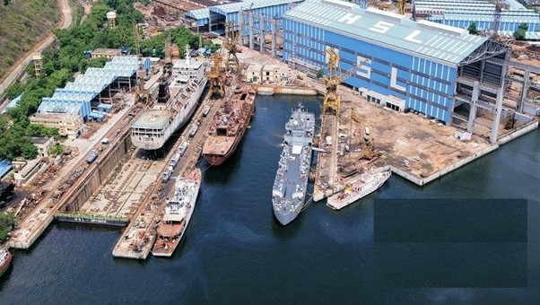
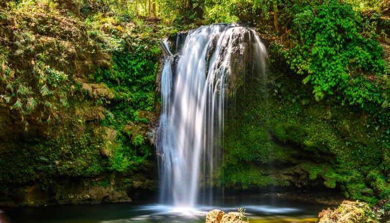
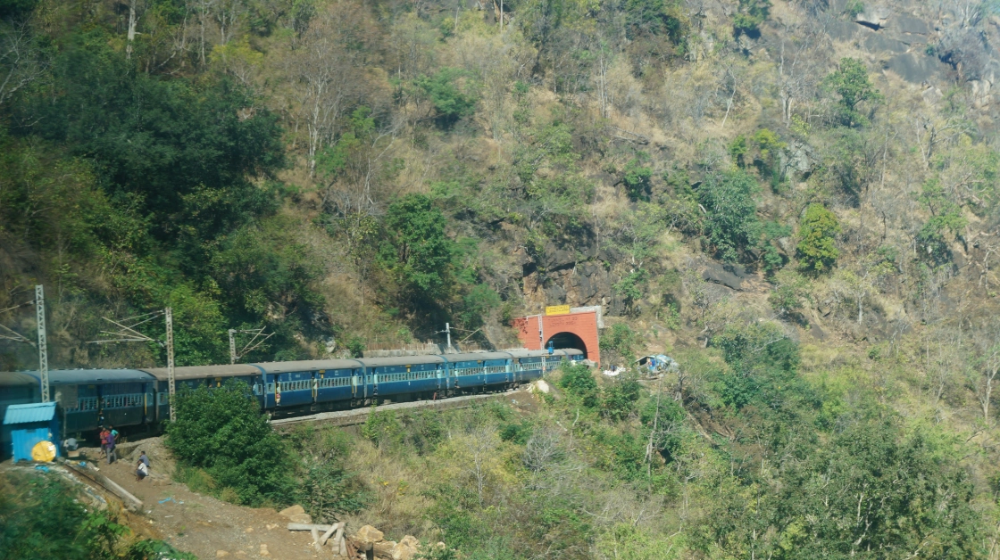
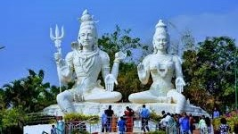
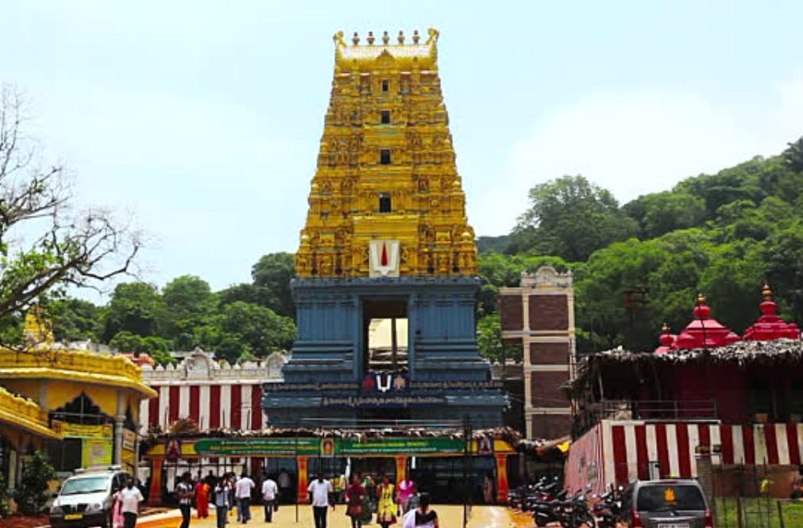
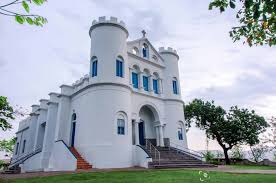
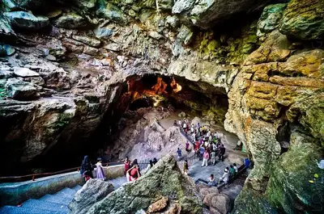
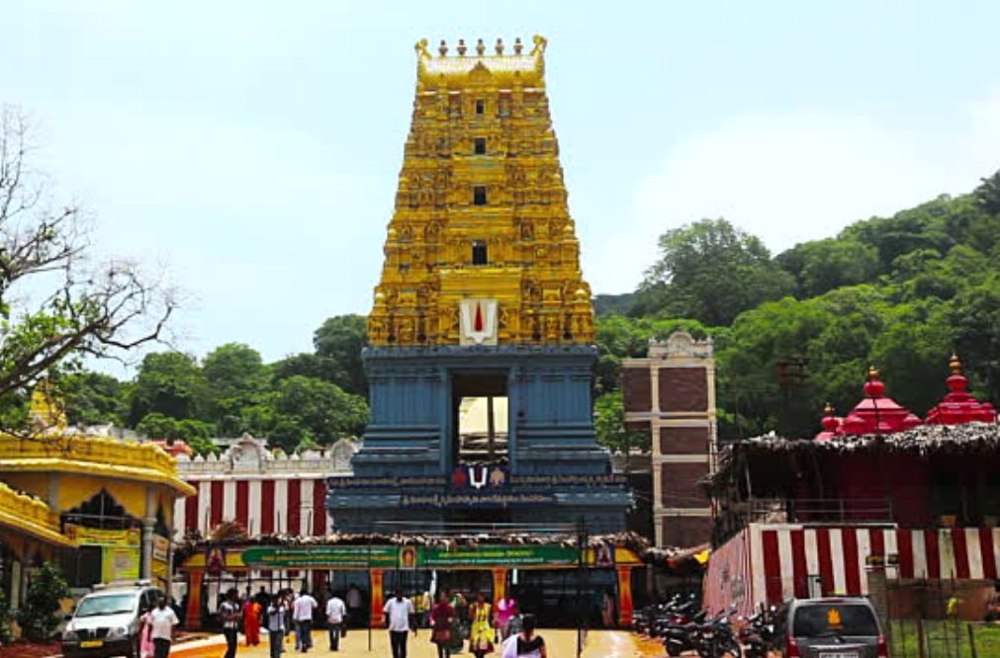
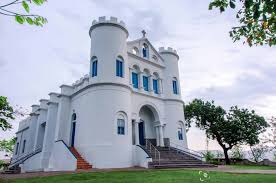
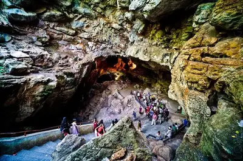

Visakhapatnam With a population of 20,91,811 and occupying 681.96 sq.km(proposed), it is the second largest city in the state of Andhra Pradesh and the third largest city on the east coast of India (after Chennai and Kolkata). Visakhapatnam is located 625 kilometres (388 mi) east of the state capital, Hyderabad. The city is home to several state-owned heavy industries and a steel plant; it is one of India's largest seaports and has the country's oldest shipyard. Visakhapatnam has the only natural harbour on the east coast of India..
Visakhapatnam The name was coined after Visakha, the Hindu god of valour. It is surrounded by Eastern Ghats and faces Bay of Bengal on the east. It is also called the City of Destiny, because of its landscapic view and very attractive beaches. It is the headquarters of Eastern Naval Command, It is the only city in India that can boast of two of the largest ports in the country - the Vizag port and Gangavaram Port. The Visakhapatnam port, opened in 1933, also figured in India's top five ports in terms of the volume of cargo handled in 2022 and the places to visit in vizag are : Biodiversity Park, Botanical Garden Visakhapatnam, Araku Valley, Rishikonda Beach, Rama Krishna Beach, Yarada Beach, Simhachalam Temple, Air Craft Museum, Dolphin's Nose, Indira Gandhi Zoological Park.




 




